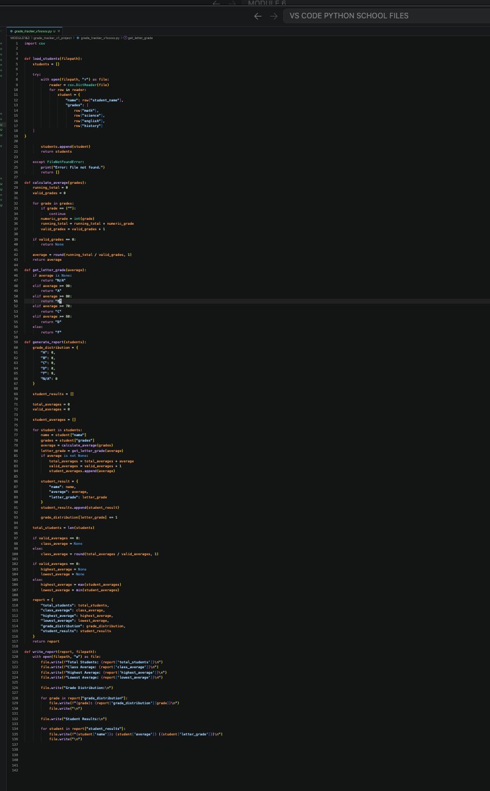
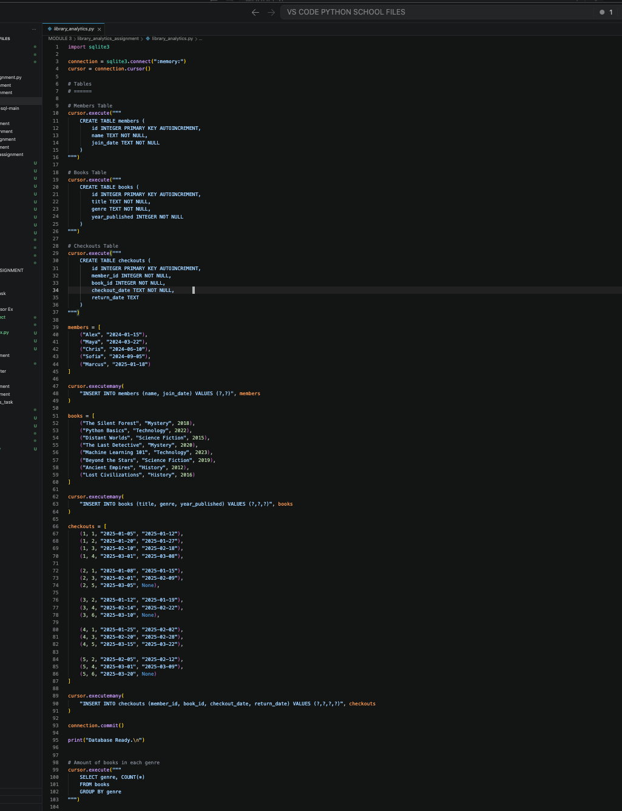
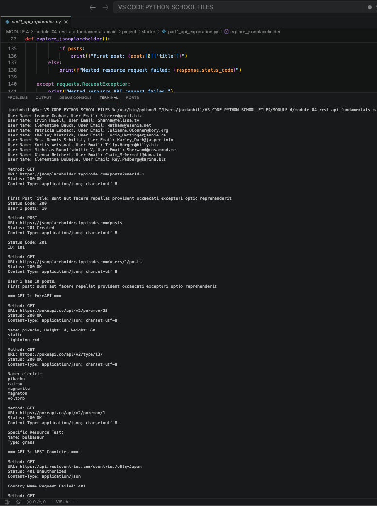

Student Grade Tracker
Module 1 - Python Fundamentals
Built a Python application that manages student records, reads and writes CSV files, calculates grades and averages, and generates student performance summaries.

AI Software Engineer | Coding Temple
My name is Jordan and I am transitioning careers into AI Software engineering. I have worked many different types of labor jobs but always felt I could use my brain more. I have developed impeccable communication and problem solving skills throughout that time. I will be using that experience to help me build AI-powered applications.
Currently I am a little more than halfway through the Coding Temple Curriculum and really enjoy what I have been learning to build and create.
Module 1 - Python Fundamentals
Built a Python application that manages student records, reads and writes CSV files, calculates grades and averages, and generates student performance summaries.

Module 3 - SQL & Database Development
Developed a library management application using Python, SQLite, and SQLAlchemy. The system manages books, authors, members, and borrowing records through database operations.

Module 4 - REST API Development
Developed a Python application that interacts with public REST APIs using the requests library. Implemented GET, POST, PATCH, and DELETE requests, JSON parsing, authentication, and HTTP error handling.

Email: hello@example.com